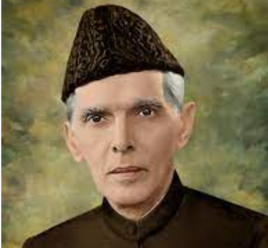

Quaid-e-Azam
The man who gave his life for justice

This the picture of the person who the hero of Pakistan
Here the time lines of the hero
- Born: December 25, 1876, Karachi
- Died: September 11, 1948, Karachi
- Buried: September 12, 1948, Mazar-e-Quaid, Jinnah's Mausoleum, Karachi
- Spouse: Rattanbai Jinnah (m. 1918–1929), Emibai Jinnah (m. 1892–1893)
- Education: Lincoln's Inn (1893–1896), MORE
Muhammad Ali Jinnah was a barrister, politician and the founder of Pakistan. Jinnah served as the leader of the All-India Muslim League from 1913 until the inception of Pakistan on 14 August 1947, and then as the Dominion of Pakistan's first governor-general until his death. Wikipedia